Carte d’ensemble
Vue dépliée des connexions. Chaque liaison est réversible après aménagement, sous réserve des restrictions de charge et des dangers locaux.
Ouvrir la carte vectorielle en grand ↗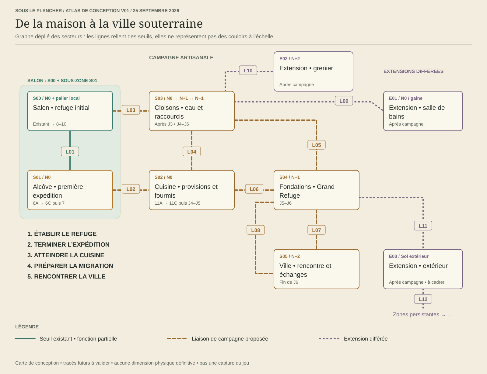
Registre des passages
| Accès | Liaison | État / étape | Conditions |
|---|---|---|---|
| L01 Fissure sud | S00 ↔ S01 N0 → N0 | Partiellement existant 6A–6C | À vide actuellement ; lanterne en 6A ; élargissement et caisse en 6B. |
| L02 Joint rompu | S01 ↔ S02 N0 → N0 | Prévu 11A | Deux voies : reconnaissance étroite à vide ; pont construit pour porteurs. |
| L03 Fente de cloison | S00 ↔ S03 N0 → N+1 | Prévu Après J3 | Échelle et palier ; lanterne ; futur transport vertical mesuré. |
| L04 Gaine de service | S02 ↔ S03 N0 → N+1 | Prévu Après J3 | Raccourci à reconnaître et aménager ; caisse selon gabarit. |
| L05 Puits maçonné | S03 ↔ S04 N+1 → N−1 | Prévu J6 | Descente équipée, paliers ; capacité chargée avant migration. |
| L06 Galerie sèche | S02 ↔ S04 N0 → N−1 | Prévu J6 | Seconde route de migration ; travaux depuis le côté accessible. |
| L07 Porte de maçonnerie | S04 ↔ S05 N−1 → N−2 | Prévu J6 | Accès principal à reconnaître ; point d’accueil de la ville. |
| L08 Galerie haute sèche | S04 ↔ S05 N−1 → N−2 | Prévu J6 | Seconde arrivée, plus longue ; travaux sans ressource enfermée derrière. |
| L09 Branche humide | S03 ↔ E01 Gaine → N0 | Différé Extension | Seuil protégé contre écoulements ; retour sec. |
| L10 Colonne haute | S03 ↔ E02 N+1 → N+2 | Différé Extension | Haltes et capacité chargée validées avant ouverture. |
| L11 Soupirail | S04 ↔ E03 N−1 → extérieur | Différé Extension | Zone tampon et trajet retour ; pas de téléportation. |
| L12 Frontières extérieures | E03 ↔ Z* Extérieur variable | Différé Extension | Z* désigne une famille de nouvelles zones persistantes. Chaque instance aura son ID et ses seuils réversibles ; ce n’est pas un secteur déjà dessiné. |
Comprendre les niveaux
Ouvrir la coupe en grand ↗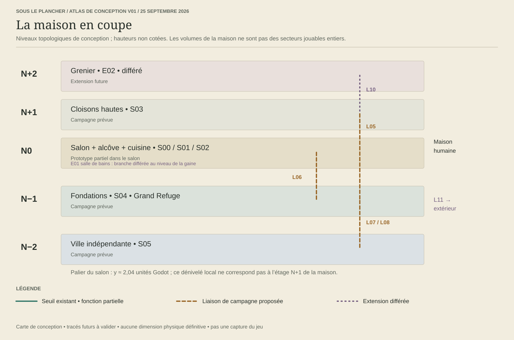
Les niveaux N désignent des strates de conception, pas des coordonnées Godot. Le palier actuel à y ≈ 2,04 reste un relief local du salon. Les liaisons verticales devront avoir leurs propres files, points d’appui et restrictions de charge.
S00 · Sous-plancher du salon
N0 + palier local · Existant → 8–10
Ouvrir le plan vectoriel en grand ↗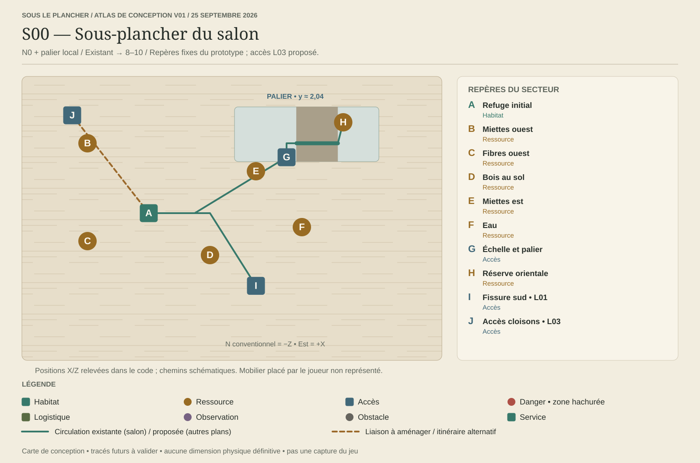
Rôle. S’installer, apprendre les besoins et préparer les expéditions.
Ressources. Bois, fibres, miettes et eau : sources déjà présentes. Renouvellement à équilibrer.
Dangers. Vibrations et menace humaine globale actuelles ; observation locale future.
Aménagements. Conserver le refuge actuel. Aménager chambres, atelier et dépôts sans obstruer les accès.
Objectif. Maintenir les besoins puis ouvrir la fissure sud et préparer une lanterne.
Retour et secours. Refuge accessible au centre-ouest ; eau et nourriture de départ conservées jusqu’à ce que la cuisine soit exploitable.
Variations entre parties. Petits tas et encombrement secondaire variables ; refuge, échelle et seuils critiques stables.
Repères et usages
| Repère | Lieu | Fonction et limites |
|---|---|---|
| A | Refuge initial Habitat | (-3 ; 0 ; 1), position actuelle ; entrée et file à préserver. |
| B | Miettes ouest Ressource | (-7 ; 0 ; -4), source actuelle. |
| C | Fibres ouest Ressource | (-7 ; 0 ; 3), source actuelle. |
| D | Bois au sol Ressource | (1 ; 0 ; 4), source actuelle. |
| E | Miettes est Ressource | (4 ; 0 ; -2), source actuelle. |
| F | Eau Ressource | (7 ; 0 ; 2), source actuelle ; pas de dépendance initiale à la salle de bains. |
| G | Échelle et palier Accès | Base (6 ; 0 ; -3). Palier à y ≈ 2,04 ; bois et fibres en hauteur. |
| H | Réserve orientale Ressource | Bois à (9,7 ; 2,04 ; -5,5). Passerelle existante, même secteur, pas la cuisine. |
| I | Fissure sud • L01 Accès | Entrée (4 ; -0,0105 ; 5), sortie z=7,4 ; inspection et travaux existants. |
| J | Accès cloisons • L03 Accès | Proposition future, emplacement à confirmer ; distinct de l’échelle du palier. |
S01 · Alcôve et entre-sol
N0 · 6A → 6C puis 7
Ouvrir le plan vectoriel en grand ↗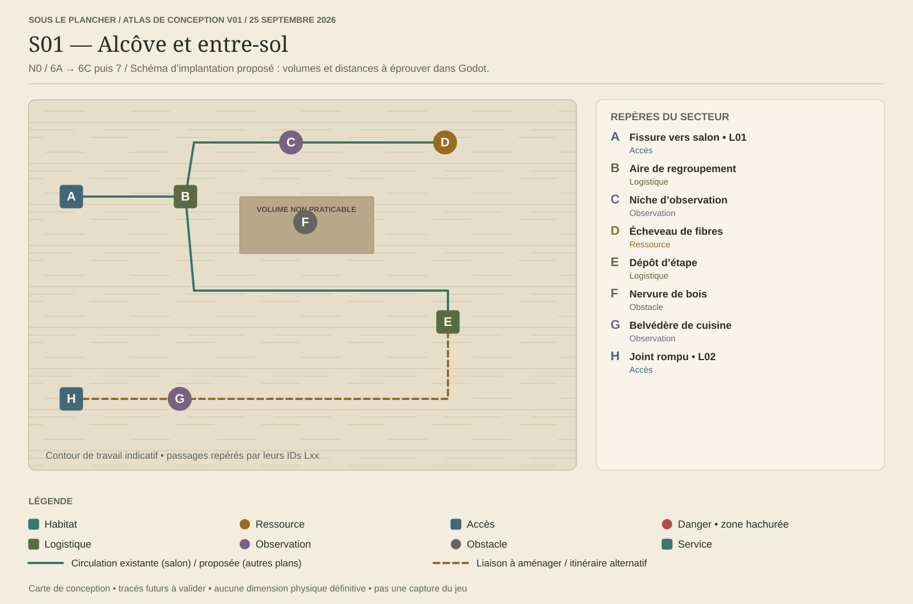
Rôle. Faire de la petite alcôve une expédition utile ; sous-zone du salon, pas un biome ajouté.
Ressources. Fibres récupérables dès 6B ; bois secondaire seulement si utile. Aucune résine nécessaire à cette étape.
Dangers. Obscurité, autonomie lumineuse, files au seuil. Faune exclue de 6A–6C.
Aménagements. Élargir le passage pour les caisses en 6B ; dépôt et lumière fixe seulement à l’étape 7.
Objectif. Reconnaître équipé, rapporter des fibres pour un lit, sauvegarder et reprendre en expédition.
Retour et secours. Retour par L01 avant la cuisine. Refuser le départ si l’autonomie est insuffisante ; garder une zone d’attente dégagée.
Variations entre parties. Gisement secondaire déplaçable à portée sûre ; point de retour et couloir principal fixes.
Repères et usages
| Repère | Lieu | Fonction et limites |
|---|---|---|
| A | Fissure vers salon • L01 Accès | Seuil actuel. Visite à vide seulement aujourd’hui ; équipement en 6A, charge après travaux 6B. |
| B | Aire de regroupement Logistique | Zone d’attente distincte du seuil ; proposition 6A. |
| C | Niche d’observation Observation | Révéler le décor sans déclencher automatiquement une récolte. |
| D | Écheveau de fibres Ressource | Première source distante proposée en 6B ; usage immédiat dans les lits. |
| E | Dépôt d’étape Logistique | Emplacement réservé pour 7A, pas un dépôt gratuit offert en 6A. |
| F | Nervure de bois Obstacle | Obstacle structurant ; préserver un chemin chargé après élargissement. |
| G | Belvédère de cuisine Observation | Indice visuel de la suite ; reste fermé au périmètre 6. |
| H | Joint rompu • L02 Accès | Accès futur cuisine : pont porteur et détour étroit à vide, lot 11A. |
S02 · Sous la cuisine
N0 · 11A → 11C puis J4–J5
Ouvrir le plan vectoriel en grand ↗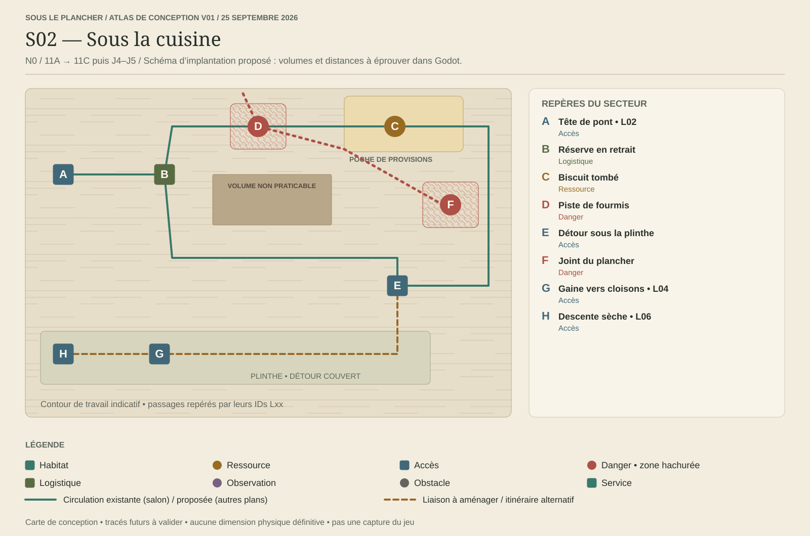
Rôle. Première zone où observer, aménager un trajet et choisir une fenêtre de récolte.
Ressources. Miettes et biscuit. Graisse et autres ressources candidates attendent des recettes utiles.
Dangers. Piste de fourmis, nettoyage et exposition sous les interstices. Horaires humains détaillés après le premier chapitre.
Aménagements. Pont d’accès, dépôt en retrait et détour praticable. Pas de construction au centre de la piste animale.
Objectif. Rapporter les provisions par deux stratégies possibles : détour couvert ou attente d’une fenêtre.
Retour et secours. Retrait vers le dépôt puis L02. Le biscuit n’est pas l’unique source alimentaire de survie.
Variations entre parties. Biscuit et piste peuvent varier dans des poches définies ; au moins un détour et une fenêtre restent possibles.
Repères et usages
| Repère | Lieu | Fonction et limites |
|---|---|---|
| A | Tête de pont • L02 Accès | Depuis l’alcôve ; pont à construire pour les charges. Détour de reconnaissance à vide. |
| B | Réserve en retrait Logistique | Zone sèche abritée pour dépôt et regroupement. |
| C | Biscuit tombé Ressource | Objectif de récolte principal ; portions comptables. |
| D | Piste de fourmis Danger | Territoire local annoncé par traces ; ne couvre pas les deux itinéraires simultanément. |
| E | Détour sous la plinthe Accès | Plus long et protégé ; alternative à l’attente près du biscuit. |
| F | Joint du plancher Danger | Lumière et exposition ; nettoyage annoncé à terme. |
| G | Gaine vers cloisons • L04 Accès | Raccourci vertical ultérieur, indépendant de l’entrée cuisine. |
| H | Descente sèche • L06 Accès | Future seconde route de migration vers les fondations ; ne pas utiliser un tuyau sous eau. |
S03 · Réseau des cloisons
N0 ↔ N+1 ↔ N−1 · Après J3 • J4–J6
Ouvrir le plan vectoriel en grand ↗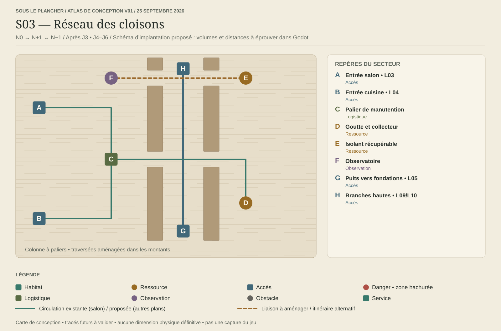
Rôle. Relier les zones, observer la maison et préparer une route verticale de migration.
Ressources. Isolant/fibres, eau d’une fuite accessible, petites fixations métalliques ultérieures.
Dangers. Goulets, chutes, câbles à éviter ; température et fumée quand leurs systèmes seront introduits.
Aménagements. Paliers, échelles, points d’attente et collecteur ; monte-charge après validation du portage vertical.
Objectif. Créer un raccourci exploitable et un second accès fiable aux fondations.
Retour et secours. Paliers de repos protégés, retour par L03 ou L04. Eau initiale du salon conservée avant collecteur opérationnel.
Variations entre parties. Poches d’isolant et traces variables ; colonne porteuse, gaine et sorties fixes.
Repères et usages
| Repère | Lieu | Fonction et limites |
|---|---|---|
| A | Entrée salon • L03 Accès | Nouvel accès futur, ne remplace pas l’échelle actuelle du salon. |
| B | Entrée cuisine • L04 Accès | Liaison de service entre étages. |
| C | Palier de manutention Logistique | Réserve au pied de la colonne ; files séparées montée/descente. |
| D | Goutte et collecteur Ressource | Eau sans exiger l’extension salle de bains ; chantier et qualité à concevoir. |
| E | Isolant récupérable Ressource | Fibres avec accès latéral à la gaine. |
| F | Observatoire Observation | Écouter les habitudes humaines depuis un couvert ; aucun accès direct au mobilier humain requis. |
| G | Puits vers fondations • L05 Accès | Descente aménagée puis route d’évacuation. |
| H | Branches hautes • L09/L10 Accès | Salle de bains et grenier différés ; paliers distincts avant leurs seuils. |
S04 · Cave et fondations
N−1 · J5–J6
Ouvrir le plan vectoriel en grand ↗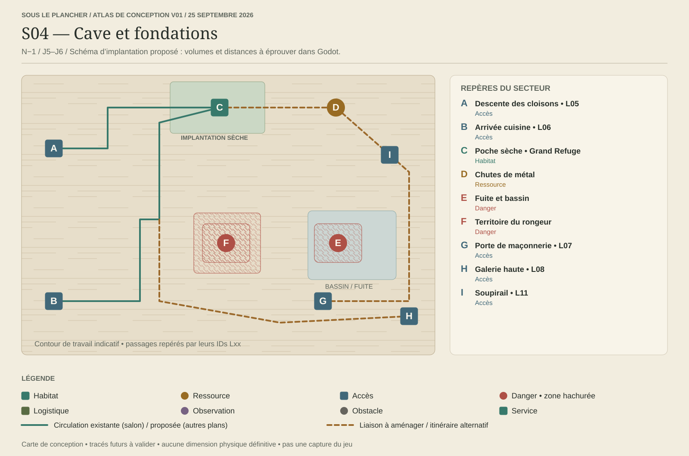
Rôle. Offrir une implantation durable et rendre la migration concrète sans effacer le refuge initial.
Ressources. Métal, bois ancien, eau à traiter ; cultures seulement après conception alimentaire.
Dangers. Froid, humidité, longs trajets, traces de souris. Rat conditionnel, pas une nouvelle espèce obligatoire.
Aménagements. Grand Refuge dans une poche sèche, réserves et ateliers ; drainage/ventilation selon systèmes livrés.
Objectif. Préparer le Grand Refuge et deux itinéraires d’évacuation avant la rénovation annoncée.
Retour et secours. Route principale L05 et repli L06. Ne jamais bloquer simultanément les deux pendant un événement obligatoire.
Variations entre parties. Débris, ressources secondaires et territoire du rongeur variables ; poche sèche et couloirs critiques garantis.
Repères et usages
| Repère | Lieu | Fonction et limites |
|---|---|---|
| A | Descente des cloisons • L05 Accès | Route de migration principale après équipement. |
| B | Arrivée cuisine • L06 Accès | Route indépendante de secours ; débouche hors du même goulet. |
| C | Poche sèche • Grand Refuge Habitat | Site à bâtir, pas une ville livrée gratuitement ni un second centre de gestion autonome. |
| D | Chutes de métal Ressource | Source avancée liée à outils et renforts. |
| E | Fuite et bassin Danger | Eau à capter/traiter ; préserver un contournement sec. |
| F | Territoire du rongeur Danger | Souris d’abord ; rat seulement si fonction différente validée. |
| G | Porte de maçonnerie • L07 Accès | Route vers la ville : reconnaître, sécuriser puis négocier l’entrée. |
| H | Galerie haute • L08 Accès | Alternative sèche vers la ville, plus longue. |
| I | Soupirail • L11 Accès | Accès extérieur différé ; sans rôle obligatoire pour finir la campagne. |
S05 · Ville souterraine indépendante
N−2 · Fin de J6
Ouvrir le plan vectoriel en grand ↗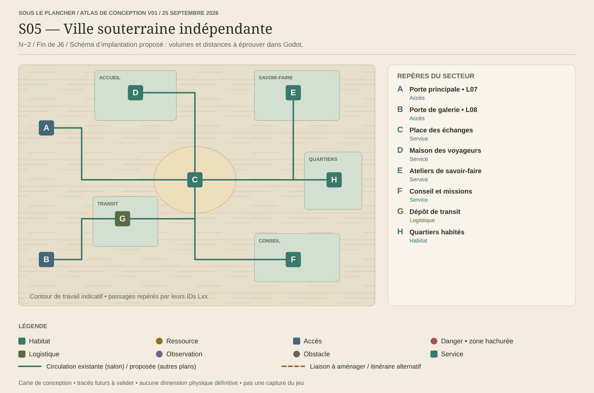
Rôle. Aboutissement de l’exploration : une société existante, alliée potentielle, distincte du refuge du joueur.
Ressources. Échanges, savoir-faire, recrutement et missions ; pas de réserve illimitée gratuite.
Dangers. Conditions d’accès et trajets de ravitaillement ; pas de conflit imposé avec la ville.
Aménagements. Point d’accueil et dépôt de transit du joueur ; pas de construction libre dans tous les quartiers.
Objectif. Établir une liaison durable, recruter ou échanger puis revenir au refuge conservé.
Retour et secours. Deux arrivées L07/L08 rejoignent des sas distincts. Une visite ne déclenche ni déménagement forcé ni fin de partie.
Variations entre parties. Offres et missions variables ; portes, place centrale et services de base artisanaux.
Repères et usages
| Repère | Lieu | Fonction et limites |
|---|---|---|
| A | Porte principale • L07 Accès | Arrivée par la maçonnerie ; accueil à débloquer dans la progression. |
| B | Porte de galerie • L08 Accès | Accès alternatif après reconnaissance. |
| C | Place des échanges Service | Marché et contrats ; règles économiques à concevoir. |
| D | Maison des voyageurs Service | Rencontres et recrutement, cohérents avec la croissance sans naissances. |
| E | Ateliers de savoir-faire Service | Découvertes et recherche, pas de déblocage automatique de toutes les recettes. |
| F | Conseil et missions Service | Objectifs de liaison, échanges et aide. |
| G | Dépôt de transit Logistique | Stock local du joueur, capacité et transport réels. |
| H | Quartiers habités Habitat | Population de la ville distincte des 30–50 habitants simulés de la colonie. |
E01 · Salle de bains
N0 / gaine · Après campagne
Ouvrir le plan vectoriel en grand ↗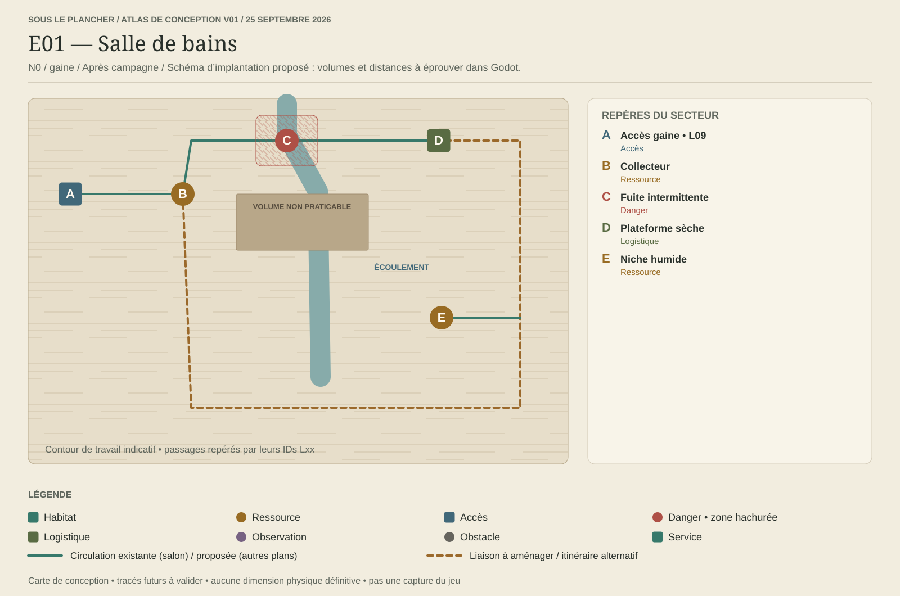
Rôle. Explorer un milieu humide, sans conditionner la survie de départ à cette extension.
Ressources. Eau, fibres humides et culture fongique si validée.
Dangers. Fuites, glissades et moisissures.
Aménagements. Passages secs, récupération d’eau et drainage.
Objectif. Obtenir une ressource ou une opportunité nouvelle ; aucune obligation pour le Grand Refuge.
Retour et secours. L09 vers les cloisons ; garder un itinéraire sec hors des écoulements.
Variations entre parties. Cycles de fuite et poches de ressources ; sortie garantie.
Repères et usages
| Repère | Lieu | Fonction et limites |
|---|---|---|
| A | Accès gaine • L09 Accès | Seuil différé depuis S03. |
| B | Collecteur Ressource | Eau disponible après travaux. |
| C | Fuite intermittente Danger | Traversée suspendue pendant l’écoulement. |
| D | Plateforme sèche Logistique | Attente et stockage hors eau. |
| E | Niche humide Ressource | Cultures candidates après système de milieu. |
E02 · Grenier
N+2 · Après campagne
Ouvrir le plan vectoriel en grand ↗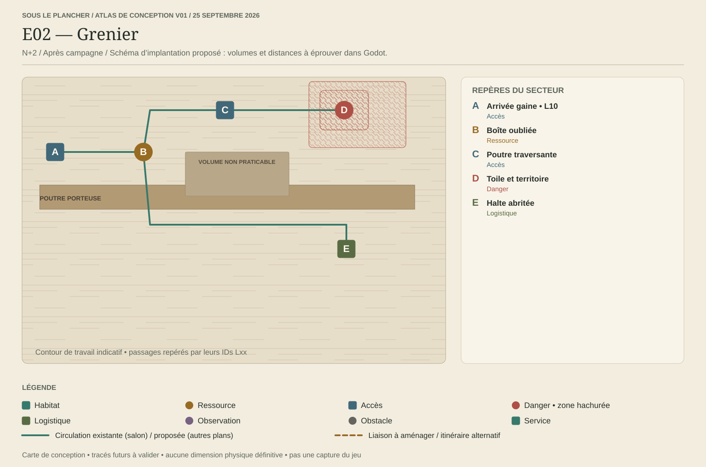
Rôle. Valoriser l’exploration verticale d’objets oubliés.
Ressources. Papier, coton, fils et objets anciens.
Dangers. Chaleur, sécheresse et araignée si déjà produite pour la campagne.
Aménagements. Haltes, cordes et monte-charge seulement après preuve des trajets verticaux.
Objectif. Atteindre une cache avancée et redescendre les charges.
Retour et secours. L10 par la colonne des cloisons ; haltes avant épuisement.
Variations entre parties. Caches variables dans une charpente artisanale ; sortie et haltes stables.
Repères et usages
| Repère | Lieu | Fonction et limites |
|---|---|---|
| A | Arrivée gaine • L10 Accès | Longue ascension avec paliers. |
| B | Boîte oubliée Ressource | Coton et papier récupérables. |
| C | Poutre traversante Accès | Route étroite à aménager pour portage. |
| D | Toile et territoire Danger | Contournement maintenu ; pas de combat obligatoire. |
| E | Halte abritée Logistique | Récupération et vérification de l’autonomie. |
E03 · Seuil extérieur et zones persistantes
Sol extérieur · Après campagne et budgets mesurés
Ouvrir le plan vectoriel en grand ↗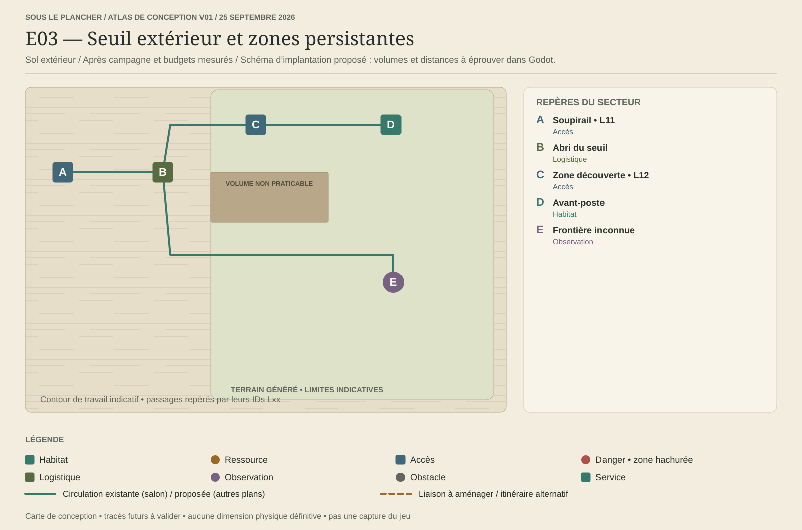
Rôle. Prolonger la partie par de nouvelles zones qui restent accessibles.
Ressources. Ressources propres aux zones ; au moins un usage validé par nouvelle ressource.
Dangers. Météo, exposition et faune à concevoir progressivement.
Aménagements. Avant-postes limités : abri, stock, atelier et ravitaillement ; refuge principal conservé.
Objectif. Explorer, établir un avant-poste utile et maintenir sa route.
Retour et secours. L11 rejoint S04 ; L12 relie les zones découvertes. Chaque nouvelle zone doit préserver un retour ou un secours possible.
Variations entre parties. Terrain procédural persistant hors maison ; connexions, constructions et conséquences enregistrées.
Repères et usages
| Repère | Lieu | Fonction et limites |
|---|---|---|
| A | Soupirail • L11 Accès | Seuil artisanal, liaison stable avec les fondations. |
| B | Abri du seuil Logistique | Zone tampon, pas une téléportation de stocks. |
| C | Zone découverte • L12 Accès | Premier nœud procédural persistant ; graine et accès enregistrés. |
| D | Avant-poste Habitat | Abri et stock associés à une ressource utile. |
| E | Frontière inconnue Observation | Nouvelles zones créées à l’exploration ; pas de carte infinie entièrement prédessinée. |